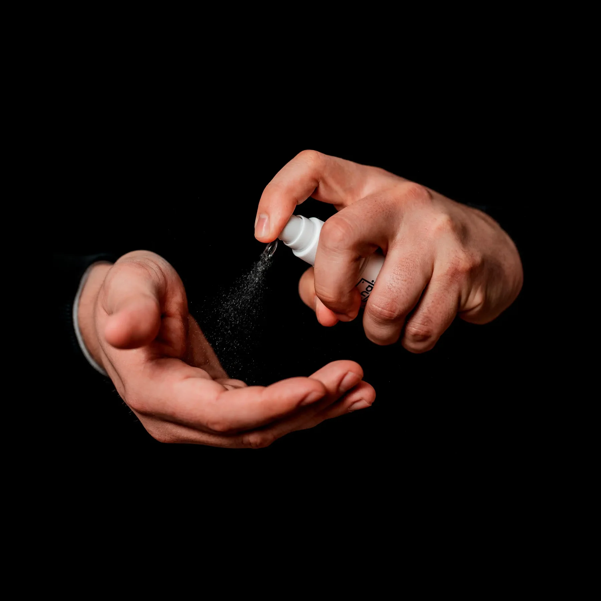
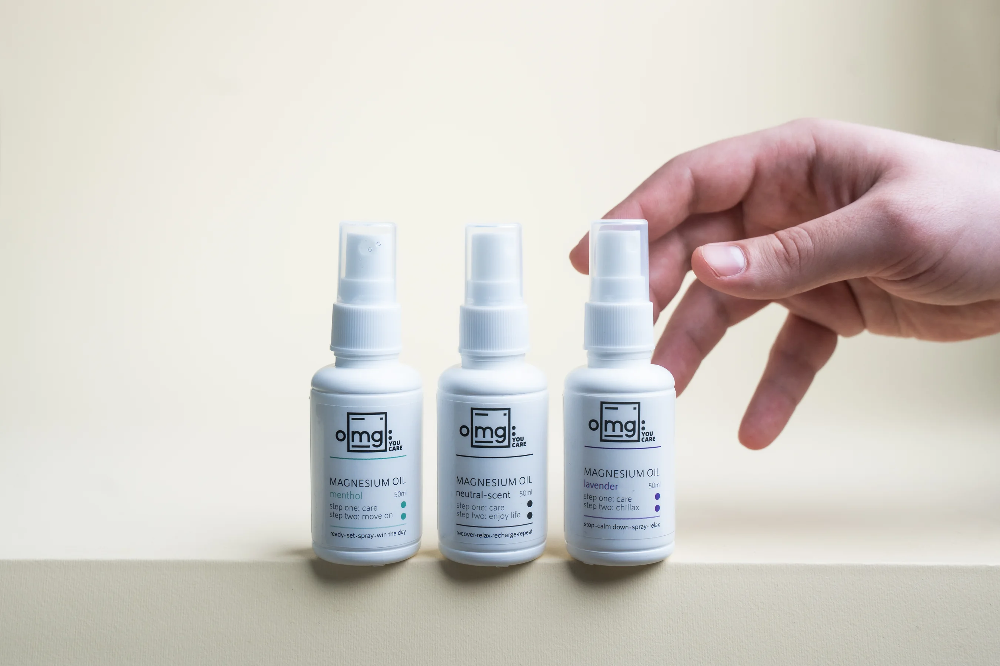
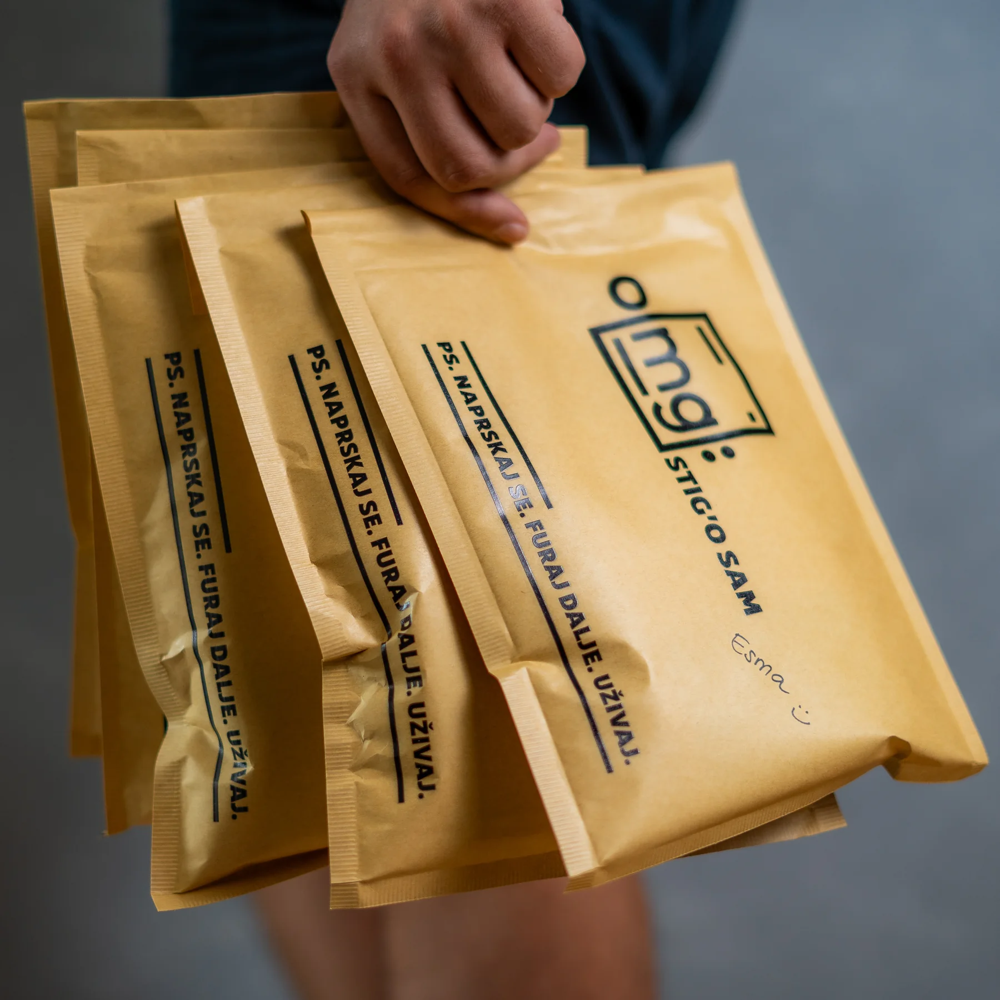

01Brief
nismo dobili brief. ali jesmo bočicu.
long story short: kolega je počeo trčati, grčevi svaki dan. punac, doktor farmacije, napravi mu bočicu ulja magnezija i da mu je.
malo poslije, Harun nas pita: “šta ćemo s ovim?” a pitanje nije bilo kako prodati magnezij, nego kako napraviti da ljudi nešto ovako požele koristiti svaki dan.
02a magnezij je kul.
i to je bio cijeli izazov.
magnezij je zapravo fascinantan. tijelo ga troši svaki dan,
a samo ga ne pravi.
ali niko ne posegne za bočicom zato što zna kako magnezij radi.
priča je postojala. samo je niko nije tražio.

03insight
ljudi ne grade odnos s proizvodom kroz sastav.
grade ga kroz osjećaj koji povežu s njim.
opuštanje nakon dugog dana. ritual prije spavanja.
onaj trenutak kad ga prsneš na kožu i tijelo kao da kaže: “e to mi je trebalo.”
04ideja
ime je nastalo skoro instinktivno.
“MG” je magnezij. “OMG” je reakcija.
i samo je kliknulo. zvuči kao emocija, ali u sebi nosi proizvod.
oko toga smo gradili sve ostalo: ton koji ne zvuči kao uputstvo,
komunikaciju koja ne predaje, nego razgovara.
htjeli smo da OMG djeluje više kao lifestyle ritual
nego “još jedan proizvod s police”.

05radili smo (i radimo) sve.
naming, identitet, ambalažu, web shop, fotografiju, video, copy,
performance, email marketing, launch kampanje, sadržaj, community.
u prvih 90 dana kreirano je preko 100 komada sadržaja.
svaka nova varijanta dobila je svoj mini identitet:
lavanda, menta, neutral, kids, roll-on, seasonal drops, bundleovi.

06rezultat
prvih 90 dana
- 2.000+organskih pratilaca
- 100.000+impresija
- 120+recenzija
- 5lansiranih proizvoda
danas
- 13+proizvoda
- 600+recenzija
- 4.9/5prosječna ocjena
- 2.000.000+impresija
07ali ...
... najvažniji dio nije bio launch.
bio je, i još uvijek je, kontinuitet. da brend nastavi pričati. da svaka bočica ima karakter. da ljudi imaju osjećaj da komuniciraju s nečim živim, a ne generičkim wellness proizvodom.
iskreno, najbitniji rezultat nije broj. to je community koji aktivno čeka
nove proizvode i edicije. to je trenutak kad ljudi počnu koristiti ime brenda kao dio rečenice.
kad recenzija ne zvuči kao “proizvod je kvalitetan”, nego: “omg, ovo stvarno radi.”